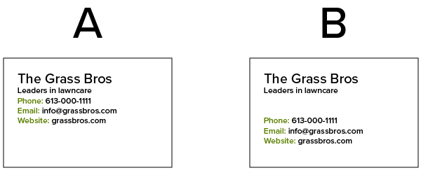
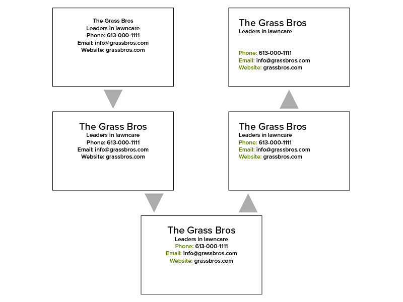
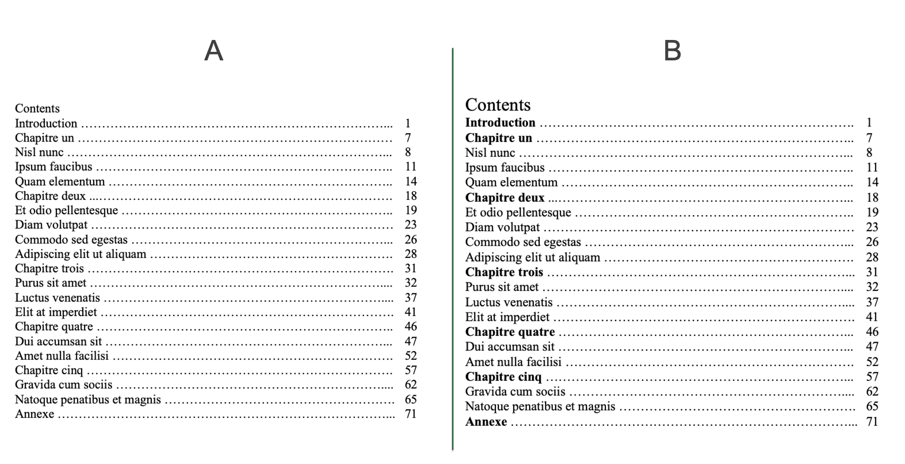
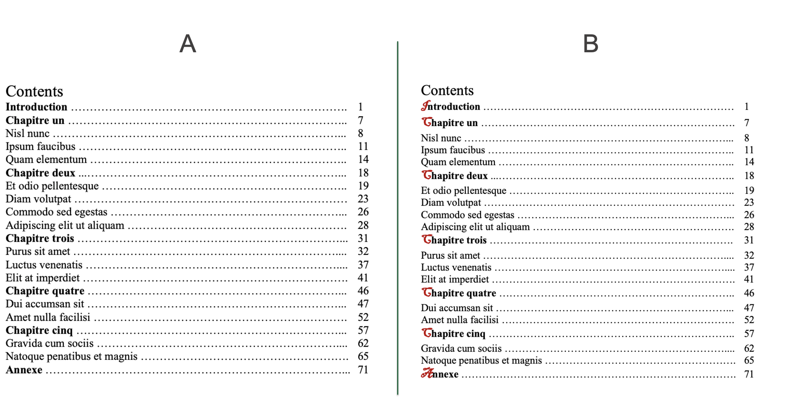
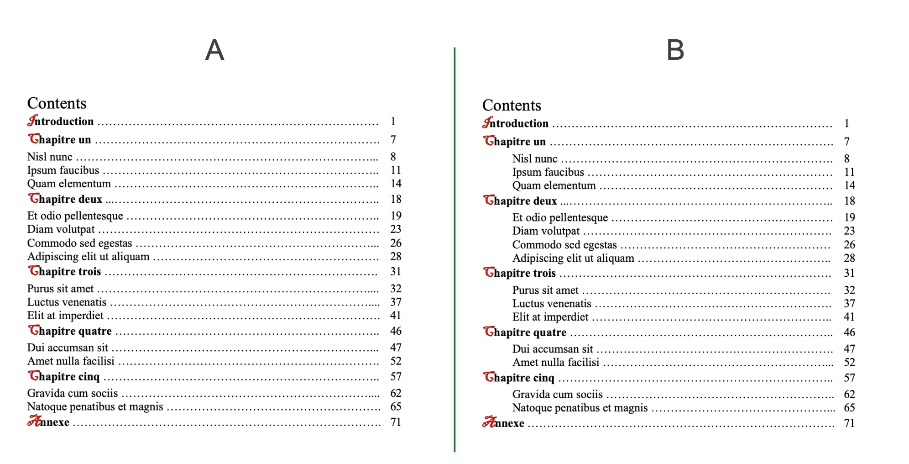
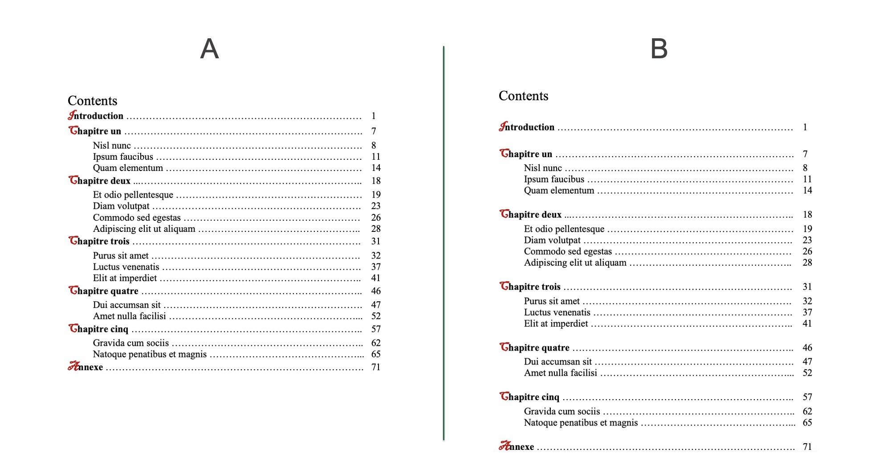

This webpage is resource for the micro teach sharing my process and access to the difference components of the micro teach.
Lesson Plan
| BOPPS | Lesson Plan | Resource |
|---|---|---|
| Bridge-in | Is graphic design all conceptual? A general misconception is that graphic design is all conceptual, but the truth is, there is a method to it as well. | Presentation |
| Objective | Our objective for today’s lesson is to learn about C.R.A.P. design principle and be able to identify the components of C.R.A.P. in designs. | Presentation |
| Pre-Assessment | Looking at the example A/B images tell the difference between the design. Getting to know learner’s existing perception of design. |
Presentation slides with A/B example images |
| Participatory Learning | Looking back at the examples discuss each part of C.R.A.P. design principle. Contrast, Repetition, Alignment, and Proximity. | Presentation Slide with C.R.A.P. |
| Post Assessment | Using Kahoot quiz performing an informal assessment of learner’s understanding of the C.R.A.P principle. | Kahoot Quiz |
| Summary | The design principle of C.R.A.P. means Contrast, Repetition, Alignment, and Proximity. C.R.A.P. helps us to define rules which govern our design and helps differentiate between good and bad designs. | Presentation |
The C.R.A.P. Report Assignment
Assignment Requirements
Write a report analyzing any one design piece based on the C.R.A.P. principles. You may choose good or bad design to discuss what you like or dislike in the design, your experience of the design, and what can be done to improve the design. The designed piece could be a poster, website, an article or promotional material. Include a link to the website site or a picture of the article or other printed material that you are analyzing.Submission
Submit a PDF of your report through Brightspace before the start of next class. March 29th, 2021 at 1 pm.| Criteria | Ideas | Connection | Extension |
|---|---|---|---|
| 0 - 60% | 60% - 80% | 80% - 100% | |
| C.R.A.P. (CLR 1 & 3) |
The student has mentioned the components of C.R.A.P. design principle and how they are used in each design. | The student has mentioned the components of C.R.A.P. design principle and how they are used in each design, with clear examples of good and bad practice. | The student has mentioned the components of C.R.A.P. design principle and how they are used in each design, with clear examples of good and bad practices and has suggested alternatives from their perspective. |
| Analysis (CLR 1 & 3) |
The student has provided a simple analysis of the design. | The student has provided a detailed analysis of the design and their experience. | The student provided a good analysis of the design, their experience and have suggested ways to improve the design. |
| Comments | |||
Course Learning Requirements
- Use deign principle to examine good and bad designs
- Design interfaces based on good design practices
- Understand and use appropriate terminology and technology
Presentation
Lesson Notes
Is graphic Design all conceptual? A general misconception is that graphic design is all conceptual but, the truth is, there is a method to it as well. The two most important parts to consider in a graphic design method are:
- Elements
- Principles
Elements
Elements are the basic units that make up a visual piece.
- Line
- Shape
- Color
- Texture
- Space
- Form
Principles
Principles are applied to the elements to define good or bad design. They give us rules that guide our design, such as using proper contrast, repeating styles for consistency, adding white space etc.
There are different principles and concepts used in the graphic design industry but the one on which most designers agree is C.R.A.P. design principle.
Objective
The objective for this lecture is to learn about C.R.A.P. design principle and be able to identify components of C.R.A.P. in a design.
Pre-assessment
Let's look at some examples to see our perception of design.
Example 1
In this example we can notice that design B has the company name in larger font, which makes it stand out on the page, easy to read, and gives it importance from the rest of the text.
Example 2
In this case we can notice that example B has a repetition of style, the green colour is repeated for the title of each piece of contact. Creating a visual connection between the three pieces of information.
Example 3
This this third example the scenario B has the text aligned to the left of the container box. This makes it easy for us to read the information and the design looks cleaner than the center aligned text.
Example 4
This final example shows how adding some space between different type of content helps with grouping the content in a design yet keeping it as one cohesive piece.
Summary
As we can see from this summary image, how our design progressed from random text, hard to read and comprehend to a semi-decent business card. In each step we have added one of the components of C.R.A.P. design principle.
What is C.R.A.P.?
C.R.A.P. is a widely used design principle which stands for Contrast, Repetition, Alignment, and Proximity. Let's discuss each one of the components of C.R.A.P. in detail.
Contrast
Visual Difference in color, size or shape of an element from its surrounding.
The first example that we saw in our pre-assessment was showing a contrast of font size used for the company name.
Here is another example of contrast in case of a book's contents page. Just by increasing the font size of the title and thickness of each of the main topic headings makes the contents list easier to read.
Repetition
Reoccurring of the same element or matching properties of different elements.
In our pre-assessment we saw the repetition of green colour for the titles of each contact information.
Following with the contents page example we can see the repetition of the style for each first letter of the main topic.
Alignment
Alignment of elements with respect to a common line of object.
Reflecting back to the pre-assessment example, the text in our design was left alined to the box making it look cleaner.
In case of the contents page example we can see that by indenting the sub-topic list it is easier to identify the main and sub topics of the book.
Proximity
Decreasing or increasing the distance between elements for grouping or separating them based on their relation.
In out pre-assessment we used proximity by adding space between the company name and teh contact information. this helped in grouping related content together.
In the example of the book content page, we have added space between the title of each chapter to group teh chapter and sub-chapters together.
Summary
The design principle of C.R.A.P. means Contrast, Repetition, Alignment, and Proximity. C.R.A.P. helps us to define rules which govern our design and helps differentiate between good and bad designs.